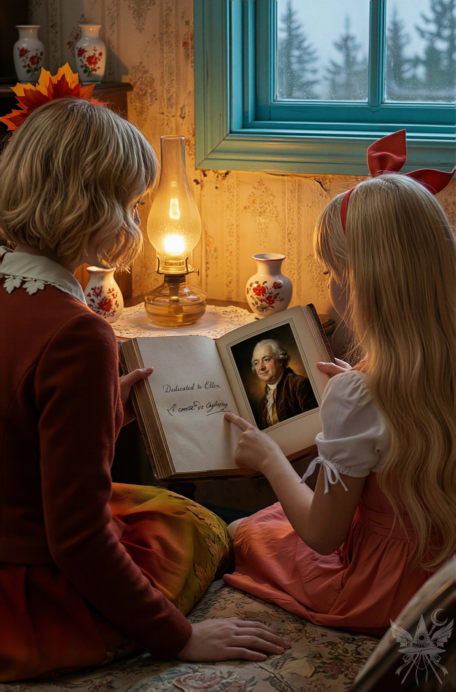

一羽のカラスが北を目指し、羽ばたいていた。朝靄に霞む青白い山々を越え、小さな分かれ道を過ぎると、その大きな黒い鳥は目的の場所へと近づいていく。空を覆い尽くさんばかりに生い茂る背の高い松の木々。カラスはその遥か上を、さらに高く舞い上がる。探し求めていた小さな店が、その黄色い瞳に映った。カラスは一通の恋文を運んでいた。
「いらっしゃーい！ お茶でもどう？」
カラスを出迎えたのは、店の女主人エレンだった。人間の姿に戻った背の高いカラス天狗は、エレンに手紙を差し出した。
「ごめんね、エレン。文からの注文がまたたくさん来ちゃって……。ほら、これ。受け取るのに、あの子の家の窓の下で一時間も待たされたのよ」
「ありがとー！ ちょっと待っててね、せめてクッキーだけでも持っていって！」
「また今度にするわ。もう、エレンがいなかったら、私、本当にどうにかなっちゃう……」
そう言い残すと、天狗は再びカラスの姿に戻り、大空高く舞い上がっていった。
エレンは包みを開け、手紙に目を通し始める。
康太くんへ
もう康太くんを悩ませたくないから、はっきり言っちゃうね。ごめんね。
康太くんは優しくて、いつも周りのことを考えてくれる、本当に素敵な人だよ。
今までこんなに素敵な人に会ったことなかった。でも、どうしても好きになれなくて……。
残念だけど、康太くんとそういう風にはなれない。最初の頃のドキドキは、ほんの一瞬で、花火みたいに消えちゃった。本当にごめんね。
康太くんは本当に優しい人だから、きっと私よりずっと素敵な人、康太くんのことを心から愛してくれる人に、出会えるよ。
だから、もう手紙を送ったり、会おうとしたりしないでほしいな。
お願い。私のことは忘れてね。
花子
手紙を読み終えると、少しだけ口元を尖らせた。
（10日か……。やっぱりね。花子ちゃんには10日しか効かなかったみたい。うーん、残念）
棚から分厚い本を取り出し、微かに息をつく。
「ああ、アレッサンドロ……。あなたがいてくれたら、一緒に答えを見つけられたのに」
「エレン……何の答えを探しているの？ 何か、心配なことでも……？」
淹れたばかりのお茶を持ってバーカウンターの後ろから近づいてきた静葉の声には、すがりつくようなかすかな震えが混じっていた。
「何でもないわよ、静葉！ 全然、何にもなーい！」
弾むような声で即座に否定する。
静葉の視線は、手元にある古書に向けられていた。
「『愛の方式』……？ どんな本なの……？」
その問いかけに、無邪気な笑顔がスッと消え去った。
声のトーンが一段下がり、感情の抜け落ちた、冷たく静かな大人の女の響きに変わる。
「それはね、ちょっと長い話になるけれど……聞いてくれる？」
そこから語られたのは、途方もなく遠い過去の記憶だった。
「私はね、1765年のロンドンで生まれたの。外の世界にある大きな街よ。知ってる？ 実はね、うちってすごいお金持ちだったの。母は毎日のように舞踏会や豪華なパーティーに出かけてて、父は当時流行っていたオカルトと錬金術にハマっていたの。私は体が弱くてしょっちゅう病気だったから、両親がそんな生活をしてるってこともあって、ほとんど外に出してもらえなかった。でも、そのおかげで10歳になる頃には社交界のマナーは完璧だったし、形而上学もみっちり勉強していたわ。当時はみんな賢者の石を探してた。ええと、知ってるでしょ？ 永遠の若さを手に入れて、鉛を金に変えるっていう、あれね。父も私も夢中になって探していたわ。何時間も地下室にこもって、いろんな材料を混ぜたり、得体の知れない蒸気を吸い込んだり……。小さな頃から、父は私にこの世界の不思議な謎を全部解き明かしたいっていう強い思いを植え付けたんだと思う。でも、父が最も解き明かしたかった謎は、結局解けなかったの」
静かな声は、一切の起伏を持たずに続く。
「父は研究すればするほど、賢者の石も永遠の命も簡単には手に入らない、何かを得るには必ず何かを犠牲にしなきゃいけない、って考えるようになったの。父がそう考えるようになって、どんどん元気を失っていくのを見て、すごくがっかりしたわ。だって、私たちはみんなが一緒に幸せになれる方法をきっと見つけられるって信じていたから。
そんなあるよく晴れた日、ロンドン中で、謎の魔術師でヒーラーでもあるアレッサンドロ・カリオストロ伯爵の噂が流れ始めたの。伯爵は死者を蘇らせたり、鉛を金に錬成したりするためにやって来たって言われて、当時の人たちは奇跡を信じたがっていたわ。私は父に伯爵に会いに行きたいって頼んだんだけど、父は伯爵をペテン師だって言って全然聞いてくれなかった」
「こうなったら自分で確かめるしかない。父に内緒で小柄な大人の女の服を着て、念入りにお化粧して、御者を買収して伯爵の部屋まで連れて行ってもらったの。
カリオストロ伯爵は本当に個性的だった。ミステリアスな雰囲気で、話し方もちょっと変わってて……。でも、彼は突然現れた珍しいお客さんを見て、びっくり仰天して大喜びしていた。私は偽名を使って、伯爵に何か不思議なことを見せてほしいって頼んだの」
「彼が披露してくれたトランプの手品は、確かに面白かったわ。けど、それだけじゃ、彼が本物の魔法使いなのか、それとも父の言う通りただのペテン師なのか、見分けがつかなかった。そう思いかけた矢先、彼の中に、今まで出会った誰よりもミステリアスな何かを感じたの。
この人には、底知れぬ魅力がある……。ただの初恋だったのかもしれないけれど、とにかく夢中になって、いつの間にか毎日のように会いに行くようになっていたわ。毎晩、家の窓から梯子を伝って抜け出し、待たせていた御者を急かして、彼の元へ通いつめた」
「しばらくすると、アレッサンドロは私が別人になりすましてることに気づいていたみたい。でも、咎めるでもなく、気にしてない様子だった。彼は惜しげもなく、魔術や錬金術の奥義を伝授してくれた。悪魔の召喚方法、魂の売買と契約の仕方、禁断の儀式、一見すると毒としか思えない秘薬の作り方まで……。まだ12歳だった私に、彼が本気で恋してたのかどうかはわからない。でも、伯爵は孤独で、話し相手を必要としてたのは確かだったわ。私自身は、すっかり伯爵に夢中になってしまったの」
「ある日、彼はネズミを生き返らせる実験を見せてくれたわ。ネズミにヒ素を飲ませて死なせてから、特別な煎じ薬に浸すと、本当に生き返ったの。それを見て、私は彼を完全に信頼するようになった。アレッサンドロは、永遠の命を得るための秘薬がもうすぐ完成するって話していたわ。
次も早く会いたいな……そうやって次の約束を心待ちにしてた矢先、最悪の事態が起こったの。私たちの関係が、父にバレてしまった。まず外出禁止にされて、それから父はあらゆるつてを使って伯爵を迫害し始めたの。伯爵はペテン師だ、詐欺師だ、悪魔と通じていると非難され、ありとあらゆる濡れ衣を着せられたわ。もちろん、父は家の名誉を守るため、私たちの関係については一切口外しなかった。その代わり、私にはひどく怒っていた。私ももちろん、そんな父に激しく反発していたのよ」
「心はまだ彼を求めていたわ。でも、体の方は限界だった。屋敷に閉じ込められて、家族とは口論ばかり。愛するアレッサンドロにも会えず、そんな日が続くうちに、ひどい発作に襲われたの。医師は貧血だと言ったけれど、胸が締め付けられるようなこの苦しみは、恋煩いのせいだって分かっていた。彼に会えないと、自分が自分でいられなくなりそうで……。
医者は匙を投げて、的外れの薬を出すだけ。父は父で、怪しげな儀式に頼るばかりで、私の容態は悪くなる一方だった」
「そんな私のことを聞きつけたアレッサンドロは、危険を顧みず屋敷へ来てくれたの。逮捕されて牢獄行き、最悪国外追放もあり得るのに、私を助けようとしてくれたのよ。
もちろん父は拒否したわ。でも母がアレッサンドロの治療を強く勧めたの。
アレッサンドロが部屋に来てくれた時には、もう手遅れだった。彼の力でも私を救うことはできなくて。今にも止まりそうな心臓の鼓動を感じながら、朦朧とした意識の中で、アレッサンドロへの永遠の愛を誓って、『天国でまた会いましょう』って言ったの。でも彼は静かに首を横に振るだけだった。
今でも彼の最後の言葉を覚えているわ。
『永遠の命をもたらす薬の作り方を……ついに見つけた』
そう言って、アレッサンドロは私に薬を飲ませ、私は意識を失ったの」
「意識が薄れゆく中、どこからか優しい声が聞こえてきた。
『あらあら、ずいぶんと恋に苦しんでいるみたいね……』
はっと我に返り、顔を上げると、まばゆいばかりに美しい女性が目の前に立っていた。
『あなたは……？』
思わず声が漏れたわ。
『私は女神。この光は、愛そのもの。愛はすべてを浄化し、新しい命を吹き込む力なの。……それは、これからもずっと変わらない。でも、エレン……あなたは恋の炎に焼かれ、今まさに命を燃やし尽くそうとしている……。見ているのが辛い……』
『でも、不思議と……心が痛まないの。……どうしてかしら？』
『それはね、私があなたの愛する心……その心を奪ったから。……愛を取り戻したいの？』
『もちろん！ アレッサンドロを返して！』
『彼のことではなくて、愛そのもののことよ。愛する心を失えば、あなたは生き続けられる。それが、あなたに与えられた選択肢。……生きたい？ 選びなさい、エレン。命か、愛か』」
言葉が途切れる。過去を反芻するように、ゆっくりと目を伏せた。
「……私は命を選んだ。そして、今の私になったの。
永遠の命を手に入れた。でも、アレッサンドロを失ったわけじゃないの。私が失ったのは、愛そのものだった」
「アレッサンドロはイギリスを去ってしまい、それきり連絡は途絶えたわ。
あの出来事の後、歳を取らなくなって、ずっとこの姿のまま。両親が屋敷から解放してくれるまで、10年もかかったわ。ようやく自由になった私はヨーロッパ中を探し回ったけれど、彼の行方は分からなかった。愛する気持ちは失ったけれど、師匠である彼の秘密を知りたいという思いは消えなかったの。でも、フランスでは1789年の出来事……そう、フランス革命に巻き込まれて、反乱軍として参加したの。大人の女性になりすます必要もあったけれど、感情がないのはかえって好都合だったわ。誰をも魅了できたけれど、恋をすることはなかったから、アレッサンドロを探すのは後回しになった。そうやって世界中を旅しているうちに、ある日、彼の訃報が届いたの。数年後、一冊の本が出版されたわ。最初のページには、『エレンに捧ぐ』とだけ書かれていた」
「彼はほとんどすべてを私に教えてくれたけれど、その本には不死の薬のレシピだけは載っていなかったの。なぜアレッサンドロが不死の秘密を墓場へ持っていってしまったのか、私にはわからない。それでも、私は世界中を旅して、インドやチベットで答えを探し求めたの。もう200年も経ったけれど、愛する心を失った私は、愛の謎も人生の謎も解き明かせずにいる」
「でも、諦めてないわ。まだ答えを探し続けているの」
ランプの小さな炎が燃える微かな音が、部屋の静寂を際立たせていた。窓ガラス一枚を隔てた外側には、霧がかった深い針葉樹の森が広がり、刺すような冷え込みを予感させる青白い光が落ちている。しかし、店内を満たす黄金色の光はひどく温かく、外界から完全に隔絶されたサンクチュアリのようだった。
テーブルの中央に広げられた分厚い古書には、古い時代の見慣れぬ男性の肖像画と、流麗な筆記体で記された献辞が残されている。それは、目の前に座る少女が、見た目通りの存在ではないことを無言で証明する、途方もなく重い歴史の証拠品だった。

エレンは甘いお茶を一口喉に流し込むと、どこまでも平坦で静かな微笑みを浮かべ、風に揺れる窓の外の松の木々へと視線を向けた。
[SYSTEM ALERT: 音響兵器デプロイ完了]
▼ 本章の絶望を1000%味わうための専用聴覚データ ▼
■ YouTube：『愛の公式』